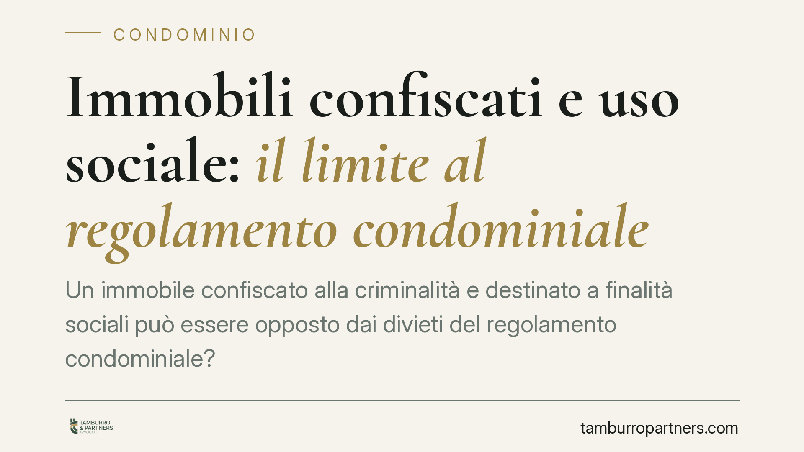

Immobili confiscati e uso sociale: il limite al regolamento condominiale
Un immobile confiscato alla criminalità e destinato a finalità sociali può essere opposto dai divieti del regolamento condominiale? La giurisprudenza amministrativa affronta il conflitto tra autonomia privata e destinazione pubblicistica del bene. Il tema interessa condomìni, enti del Terzo settore assegnatari e amministrazioni, e richiede di distinguere con precisione i limiti del regolamento dalla sua opponibilità verso un titolo di natura pubblica.

Il caso
Un immobile confiscato alla criminalità organizzata viene acquisito al patrimonio indisponibile dello Stato e successivamente assegnato a un'associazione del Terzo settore per l'accoglienza di persone fragili. Il condominio in cui l'unità si trova contesta l'assegnazione, invocando i divieti contenuti nel proprio regolamento, che precluderebbero destinazioni di quel tipo.
La questione tocca due piani distinti: la validità interna del regolamento condominiale e la sua opponibilità verso un titolo che ha origine non negoziale, ma pubblicistica. Sono piani che vanno tenuti separati, perché producono effetti diversi.
Inquadramento normativo
L'art. 1138, quarto comma, del Codice civile fissa un limite preciso: il regolamento condominiale non può menomare i diritti di ciascun condòmino quali risultano dagli atti di acquisto e dalle convenzioni. Il regolamento disciplina l'uso delle parti comuni e i rapporti tra condòmini, ma non può incidere sul contenuto del diritto di proprietà delle singole unità oltre i limiti consentiti.
I cosiddetti regolamenti "contrattuali" possono introdurre limitazioni alle destinazioni d'uso delle unità esclusive, purché accettate e trascritte. Si tratta però di vincoli che operano sul piano dei rapporti privati tra proprietari.
Diverso è il regime dei beni confiscati. Il Codice antimafia (d.lgs. 6 settembre 2011, n. 159), agli artt. 48 e seguenti, disciplina la destinazione dei beni confiscati e il loro riutilizzo a fini istituzionali e sociali. L'assegnazione a un ente per finalità sociali trova fondamento in un provvedimento amministrativo che attua una destinazione impressa dalla legge. È un titolo che non deriva dall'autonomia privata e non può, per ciò solo, essere paralizzato da una clausola regolamentare condominiale.
Il principio
L'orientamento della giurisprudenza amministrativa valorizza la distinzione tra efficacia interna del regolamento e sua inopponibilità verso il titolo pubblicistico. Il regolamento continua a vincolare i condòmini nei loro rapporti reciproci, ma non può essere opposto per impedire una destinazione sociale legittimamente impressa al bene confiscato dall'autorità competente.
In altri termini, la clausola regolamentare non viene "annullata": resta valida tra le parti private, ma cede di fronte a un interesse pubblico tutelato dalla legge e attuato mediante provvedimento amministrativo.
Implicazioni pratiche
Per i condomìni: le clausole regolamentari sulle destinazioni d'uso conservano piena efficacia nei rapporti tra proprietari, ma non costituiscono un titolo per opporsi all'assegnazione sociale di un bene confiscato. Il ricorso fondato esclusivamente sul regolamento ha margini di accoglimento limitati.
Per gli enti del Terzo settore assegnatari: la destinazione sociale legittimamente impressa offre una base solida per l'utilizzo dell'immobile, anche in presenza di divieti regolamentari preesistenti. Resta comunque opportuno verificare la natura e la portata delle clausole, per anticipare eventuali contenziosi.
Per gli enti assegnanti (Agenzia e amministrazioni locali): la chiarezza del provvedimento di destinazione, con l'indicazione puntuale della finalità sociale perseguita, rafforza la resistenza ad impugnazioni fondate su vincoli di natura privata.
Cosa fare in concreto
- Verificare se il regolamento condominiale sia di natura contrattuale e se le clausole sulle destinazioni d'uso siano trascritte e opponibili.
- Individuare con precisione il titolo di destinazione del bene confiscato (provvedimento di assegnazione, finalità sociale dichiarata, base negli artt. 48 ss. del d.lgs. 159/2011).
- Documentare l'uso effettivo dell'immobile, per dimostrare la coerenza con la destinazione sociale impressa dall'autorità.
- Valutare separatamente il piano dei rapporti interni al condominio e quello dell'opponibilità verso il titolo pubblico, che seguono regole diverse.
- In caso di contenzioso, ricostruire la cronologia dei provvedimenti e la catena dei titoli, elemento spesso decisivo.
Il perimetro del principio
Un'avvertenza conclusiva. Il principio opera soltanto entro i confini della destinazione sociale legittimamente impressa al bene: non si traduce in una clausola generale di disapplicazione dei regolamenti condominiali. La delimitazione tra uso tutelato dal titolo pubblicistico e uso contestabile richiede una valutazione caso per caso, ancorata al contenuto del provvedimento e alla natura delle clausole regolamentari.
---
*Contributo informativo a cura di Tamburro & Partners Avvocati – Avv. Giuseppe Tamburro. Non costituisce parere legale.*
Ogni condominio ha una storia a sé.
Se gestisci un'amministrazione e vuoi un confronto su una specifica questione condominiale, scrivi allo studio. Ti rispondiamo entro un giorno lavorativo.